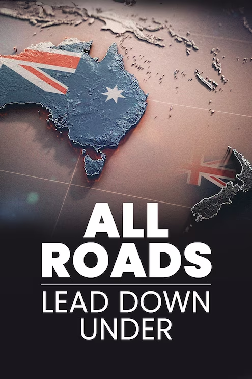

ALL ROADS LEAD DOWN UNDER
NC,202247,Min
Documentary, FIFA+ Original Production
Language: English, 日本語 (にほんご／にっぽんご), 한국어 (韓國語), 조선말 (朝鮮語)
Subtitles:Show all
Relive one of the greatest World Cups in history 20 years on.
Synopsis
All Roads Lead Down Under takes you behind the scenes as teams from all over the globe try and secure their qualification for the FIFA Women's World Cup 2023.